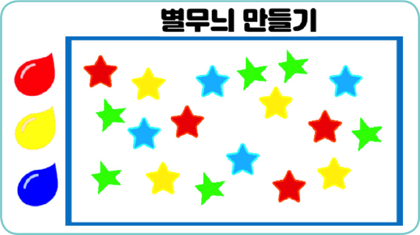
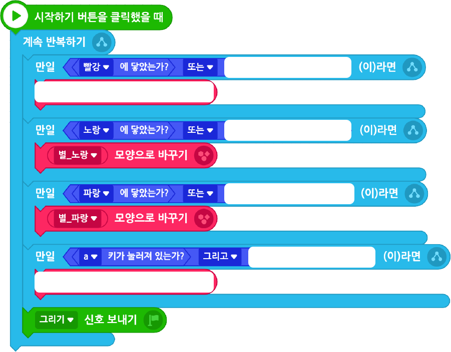
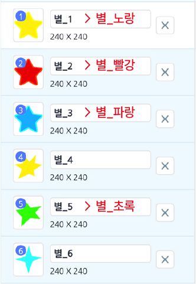

물감에 닿거나 키보드에서 ‘r’(빨강), ‘y’(노랑), ‘b’(파랑)를 누르면 지정 색의 별을 화면에 찍어 주는 별무늬 만들기 프로그램을 작성해 보자.
실행 화면

- 오브젝트
-
속이 빈 사각형
[묶음] 별
물감(빨강/노랑/파랑)
별무늬 만들기(글상자)
- 신호
-
그리기
[묶음] 별
물감 오브젝트에 닿거나 ‘r’, ‘y’, ‘b’를 누르면 해당 색의 별 모양으로 바꾼다.
‘a’와 ‘s’ 키를 같이 누르면 ‘별_초록’ 모양으로 바뀐다.
그리기 신호를 받고 마우스를 클릭하면 마우스 포인터 위치에 지정된 별 모양을 찍는다.
아래 블록을 참고하여 프로그램을 작성해 보자.

화면의 크기를 좌우로 조절하면 블록을 크게 볼 수 있어요.
[묶음] 별 오브젝트의 모양 이름을 [모양] 탭에서 다음과 같이 바꾼다.

이전
다음